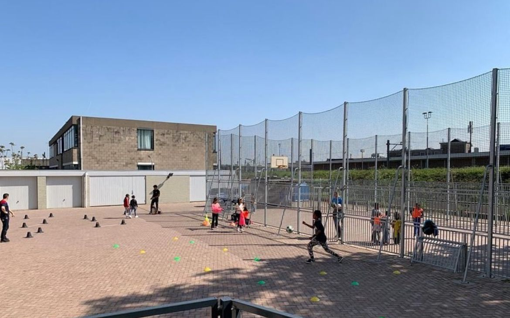

Due to more and more asylum seekers coming to the Netherlands, the time of the procedures are extended. It can take up to 15 months (or more in some cases) to process your application. Before that the detailed interview takes place, you will be invited for MediFirst. During this appointment, some questions will be asked regarding your health, whether you are doing mentally well and sleeping well and whether you are prepared for the interview.
If the MediFirst goes well, you are invited for the interview at an IND location. After two days, you would hear from your lawyer whether you are granted the residence or not or they need more time to process your application.
Asylum seekers reporting in Zutphen asylum seeker center(AZC)
Asylum Seekers' Center
During all this procedure, the asylum seeker is placed in:
Asylum seekers' centre (azc)
Regular reception centre, where you have a kitchen
Emergency reception
The COA temporarily accommodates asylum seekers in emergency shelters if there is not enough space in the asylum seekers centers (azc). These are temporary locations, like event halls, with fewer facilities than the standard COA reception locations. You don't have kitchens here. You get food from COA and around 32 euros per week.

Children playing at asylum seeker center in Maastricht
Reception of Asylum Sekeers
In the AZC, COA provides you with accommodation during your asylum procedure. If your procedure is finished, they accommodate the status holders until you are given a house in a municipality. If your application is rejected, you are allowed to stay at the location for a short period to prepare for your return. DT&V helps you arrange your return.
During your stay at COA, there are some house rules you need to follow. For example, you are obliged to go to the appointments. You have to report yourself every week at the location. You must keep the location clean. You have a right to basic health insurance, read more GZA. You get around 70 euros per week for clothes and to buy and cook your own food.